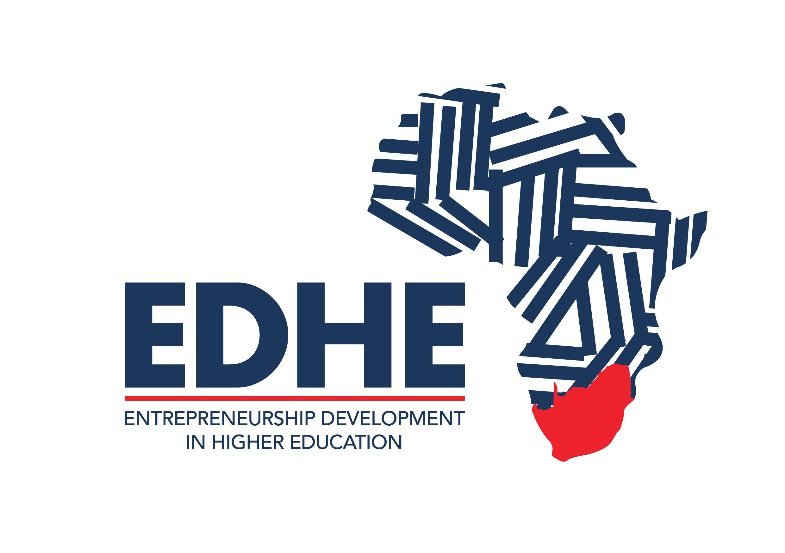
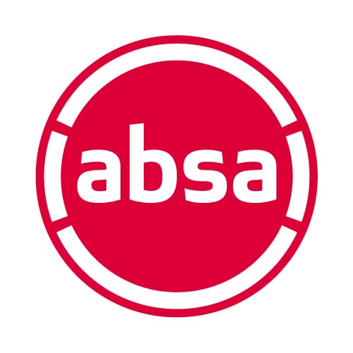
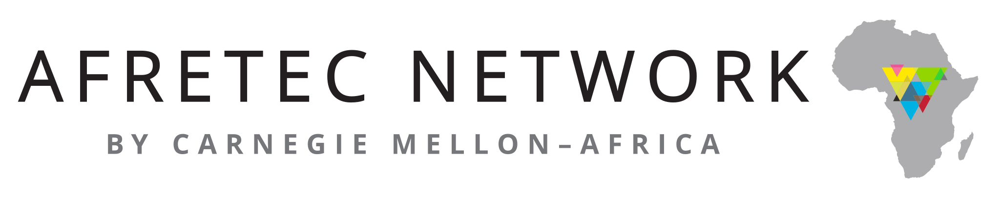

EDHE Absa
Inno-Varsity
2nd at Wits · Represented Wits regionally
Mentorship and feedback
PROGRAMME & PARTNERS


Each experience shaped how we built ClevaCado.
2nd at Wits · Represented Wits regionally
Mentorship and feedback


AI for African problems
Simpson’s team won


Eight weeks of planning and building
Hardware · software · lab data